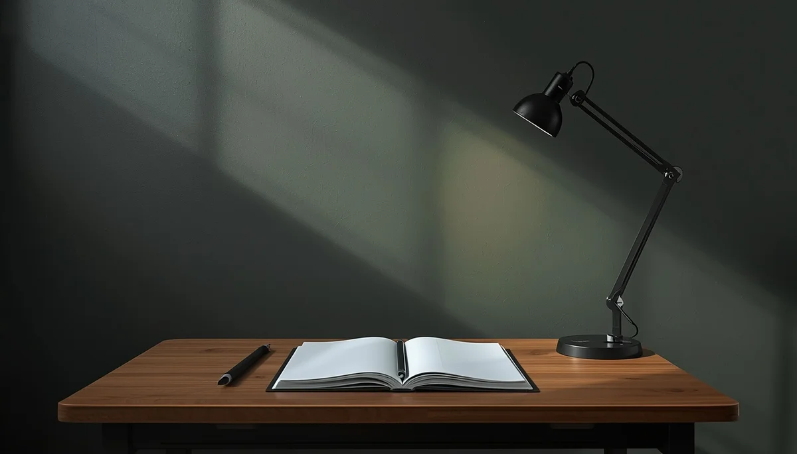

Prevención en la escuela y los grupos de iguales
A medida que los niños crecen, el entorno escolar y la interacción con sus compañeros adquieren un peso determinante en su socialización. Los comentarios sobre el físico, las burlas puntuales o la presión por encajar en determinados estereotipos estéticos circulantes en los centros educativos pueden impactar de lleno en su autoestima.
La presión social y los estereotipos externos
Las comparaciones, los cánones rígidos y las exigencias de aceptación grupal exponen a los menores a situaciones de vulnerabilidad emocional. Mantener una comunicación fluida en casa permite detectar a tiempo si surgen vivencias de rechazo o inseguridades vinculadas a la imagen corporal en el colegio.
Fomentar la resiliencia y el espíritu crítico
Educar a los menores para que valoren la diversidad corporal y desarrollen un criterio propio frente a las modas o comentarios superficiales es una herramienta clave de protección emocional que podemos reforzar de la mano de los centros educativos.
"Dotar a la infancia de espíritu crítico frente a los estereotipos estéticos es blindar su autoconcepto frente a la presión exterior."
Coordinación entre familia y entorno educativo
Mantener canales de diálogo abiertos con el profesorado facilita la detección temprana de cualquier indicador de malestar o dinámicas de burla en el patio escolar.
➔ Volver al índice de Trastornos TCA